I used Springboot version 2.2.4 as I ran into issues with getting Springboot 3 to work, and as the Springboot version 2 setup was what was used in the lecture notes, I went with that. The config is fairly simple, including dependencies for thymeleaf, jpa, postgres, etc.
For the most part, the docker config was similar to that shown in the lectures. I had to mark many of the primary keys as 'GENERATED ALWAYS AS IDENTITY' for it to work nicely with the JPA, otherwise it would return a null value for a newly generated ID, crashing the program.
I used thymeleaf with bootstrap to display the catalogue (and all the other pages). I simply passed a findAll result from the product repository to the page, and had it display the items.
The items are reached through the URL, e.g. '/product/1' where 1 is the product id.
The information about the items is all loaded in through JPA.
The navigation bar is generated using bootstrap, and changes based on whether the user is logged in or not (for example, the previous purchases link does not appear if the user is not logged in).
I elected to avoid unnecessary javascript where possible to maximise responsiveness on older hardware, so the purchase button is actually a post form submit button with a hidden field containing the product id.
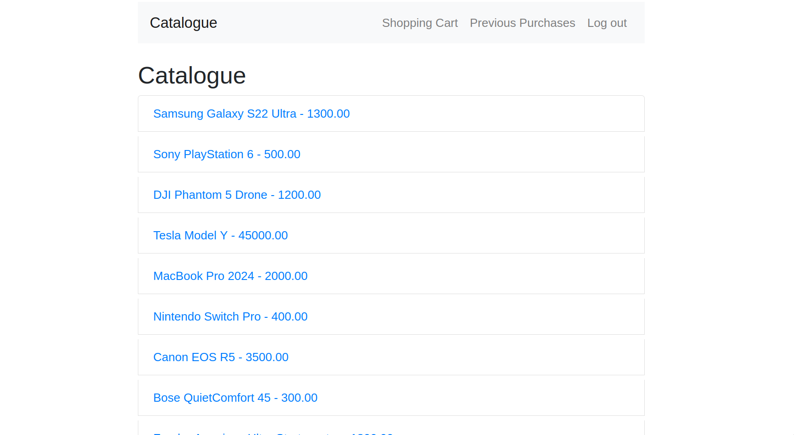 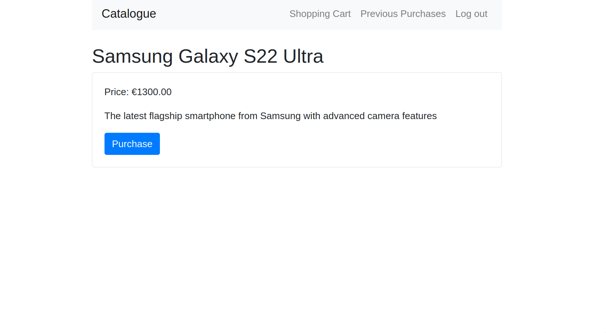The shopping cart works much the same as the catalogue. As well as adding in the products and quantities to the model, I also add the total cost of all the items, as this is not possible (or much more difficult anyway) to do entirely with thymeleaf.
I used a basket cookie to store the items a user had in their basket, consisting of the product ID and the quantity. I made functions for ease for parsing and updating this cookie.
I used bootstrap for the buttons to increment and decrement the quantity, sending a GET request to an increment/decrement controller on click. This would modify the contents of the basket cookie. When the quantity of an item reached 0 it was automatically removed from the cookie, and therefore is not displayed once it is removed. The purchase button sends a get request to a purchase controller, which is in charge of handling the purchase logic.
The price for the items displayed is the full price for that item. In the thymeleaf code I multiply the quantity by the unit price for each item to get the total price for each item.
Initially, I simply used a hashmap for the 'Product: Quantity' pair which was given to the page. However, as the ordering for a hashmap is not consistent, after reloading the page or incrementing/decrementing items, often the item ordering would change. This lead to a very annoying and unpredictable user experience. To rectify this I instead used a linked hashmap, which does have a consistent ordering, thus ensuring the ordering of the items on the page would not change on reload.
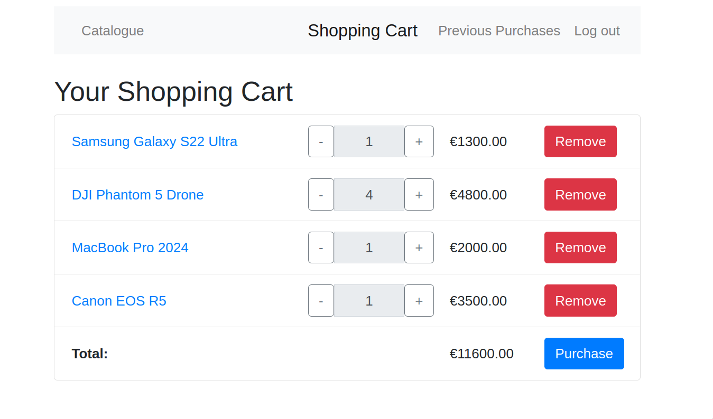The page also runs a check to see if the user has anything in their cart. If they do not, the thymeleaf displays a message to inform the user of this, instead of simply having a blank cart page.
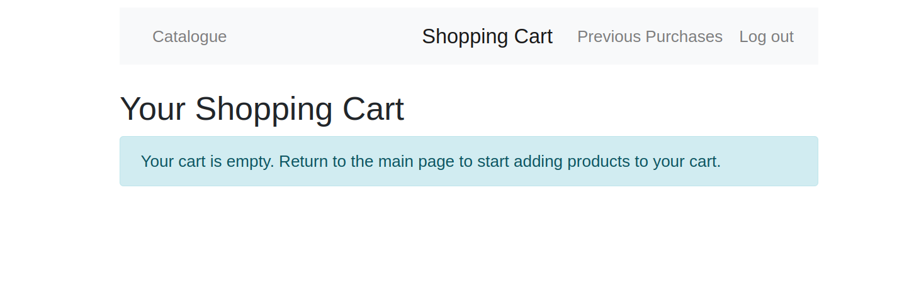The purchase controller checks to see if the user is logged in. If they are not, it sends the user to the login page and adds an error message to the login model. It also adds a hidden attribute to the login model, 'continueTo'. This serves to tell the server where to redirect the user after logging in/signing up. This means that the user is returned to the purchase page after logging in, rather than the default behaviour of sending them to the main catalogue page. This value is also passed as a parameter when you click the option to sign up instead, use the incorrect login, and so on, ensuring the user is correctly brought back to the desired page.
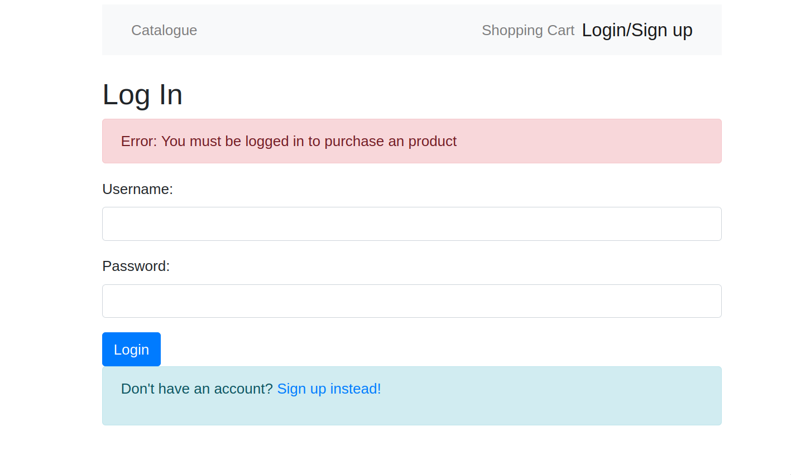There are checks for incorrect login credentials, signing up with an existing username, etc. All these will display an error message to the user informing them of what they have done wrong. Once a user signs up/logs in correctly, a cookie will be added, containing the hash of their username + password. This hash is also stored in the database, and when a user purchases a product it is what is used to get their entry from the JPA. Storing this hash instead of just the username prevents people from modifying the cookie, and simply entering another users' username and being able to purchase products on their account.
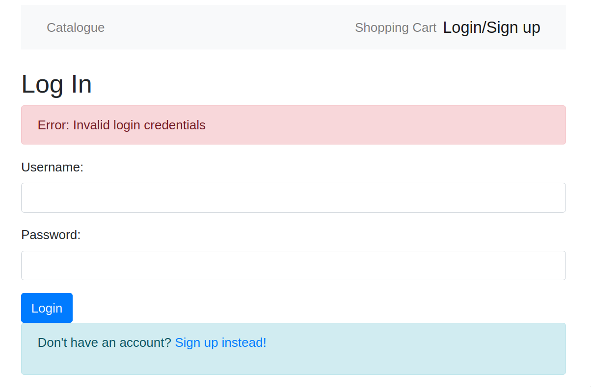 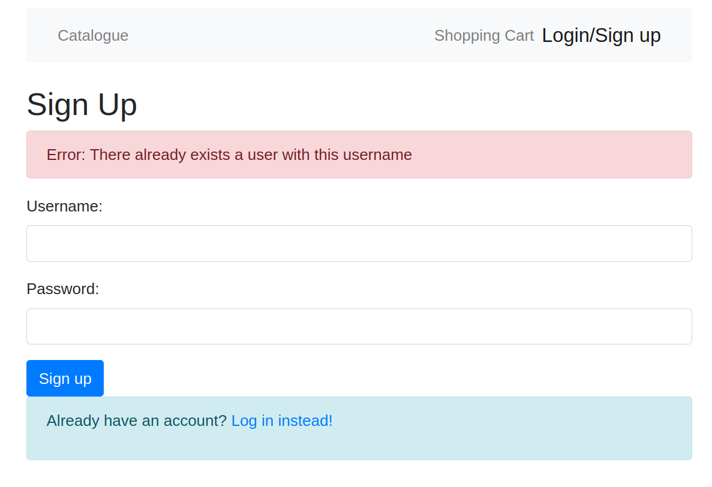When a user selects the purchase button once they are logged in it adds the purchase to the system and brings them to a purchase confirmation page, so they know the purchase was successful (the system does not actually send an invoice to the user's email).
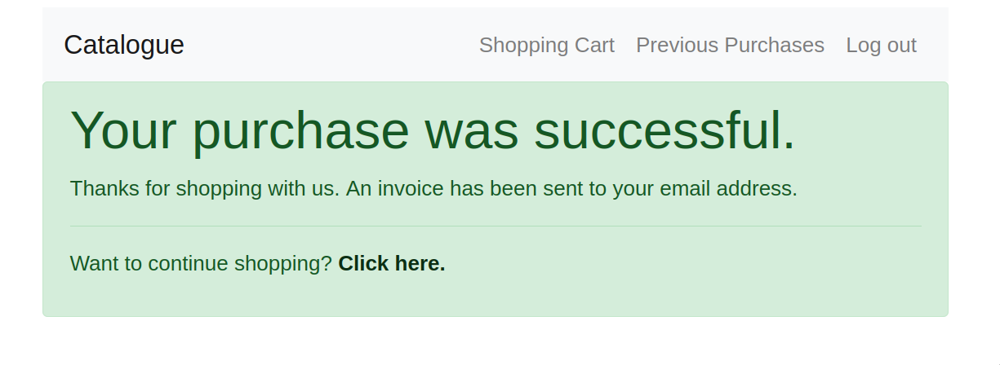The user can view their previous purchases at any time from the navigation bar. This displays only the purchases from the logged-in user. Users who are not logged in cannot access this page, and will be redirected to the login page with an error message. Once again, the redirect is added to the model, so once the user successfully logs in/signs up, they will immediately be brought to the previous purchases table.
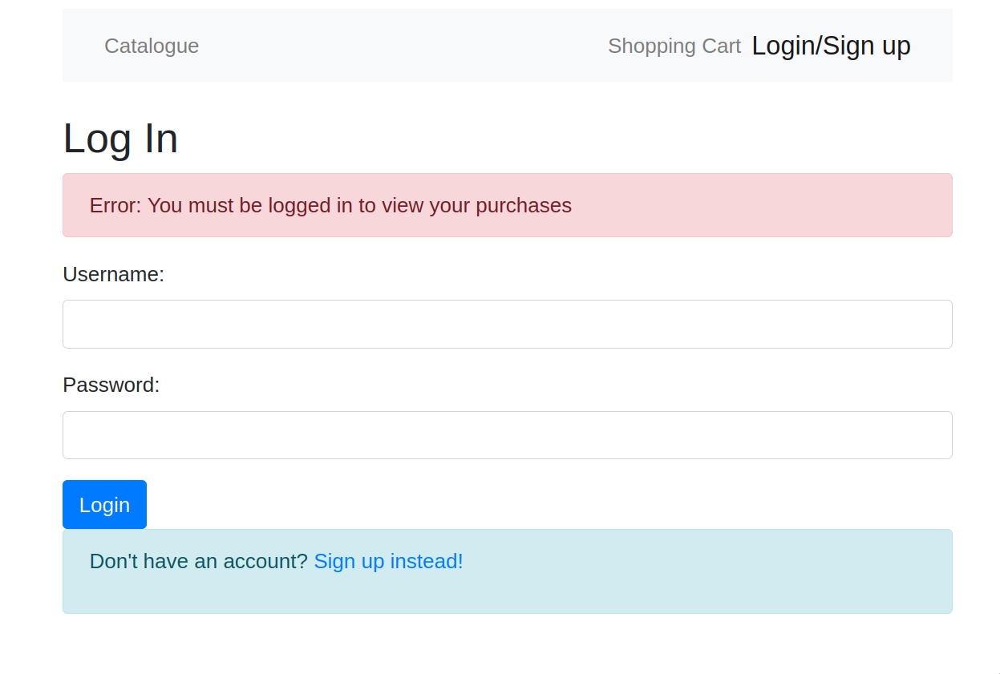 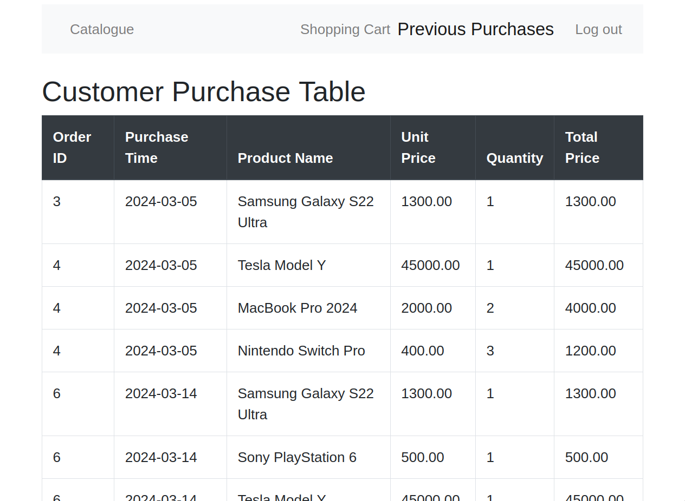The database has a purchase table, which contains the purchase id, customer id (foreign key to the customer table), and the timestamp. There is also a purchase product table, which has a purchase product id, the purchase id (foreign key to the purchase table), product id (foreign key to product table), and quantity. Annotations in the Entities (@ManyToOne, @OneToMany, @JoinColumn, etc.) for the foreign keys removes the need for a complicated join operate when the purchase table is displayed.
The user can log in or sign up for an account at any time, by clicking the button on the nav bar. This means they can log in the moment they access the site, rather than waiting until something requires a login and forces them to the login page.
Unfortunately, due to other assignments and exams, I was unable to complete this section in time. However, whilst making the site, I had thought ahead about how I was going to implement this, and already added the necessary columns to the database and so on, to enable this feature to be easily added. The customer table contains an 'isAdmin' boolean, and the product contains a 'hidden' boolean. The idea was to make the products essentially immutable. Whenever an existing product was added, instead of modifying the existing entry, it would instead simply create a new entry, with the same product name but different values for price, description, etc. as needed by the admin. The old item would then be hidden from the catalogue, however, would still be visible in the purchase history for users. This would have the effect of modifying the items on the catalogue without modifying any of the orders, as they would have the purchase id of the old (hidden) item. This would be simple to implement based on the existing framework I have created.
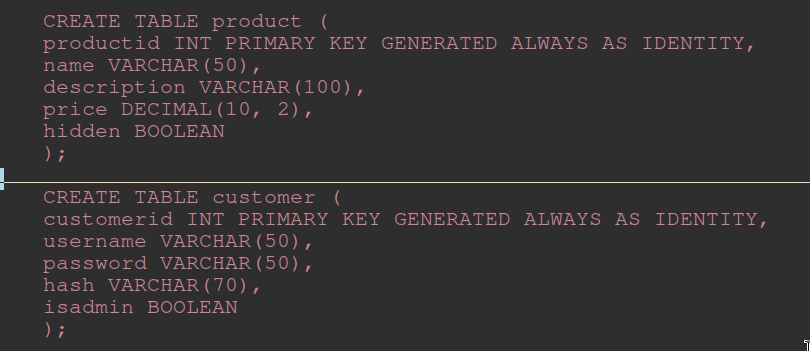